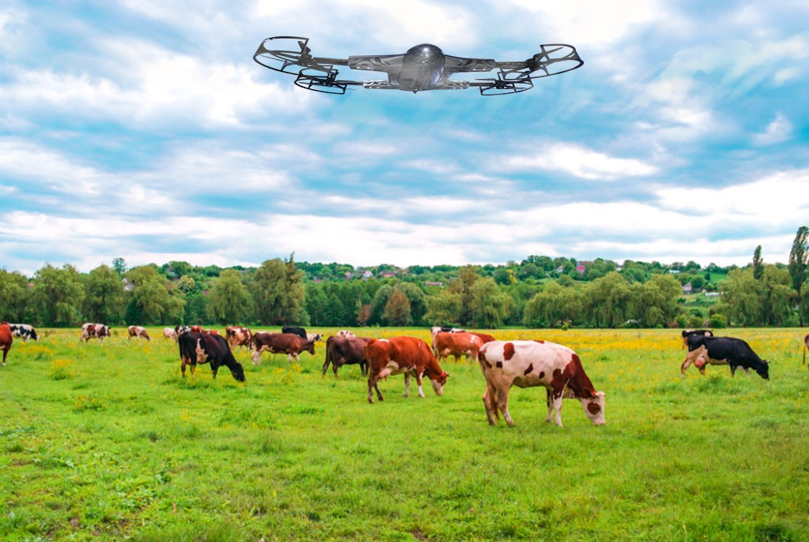

Qual a importância da tecnologia para os animais/pecuária?
Creio que todos imaginam, mas, a tecnologia atual ajuda na monitoração do comportamento e saúde dos animais. Como pode ser visto na imagem, drones ajudam a monitorar o comportamento, e raio-x, entre outros ajudam a manter a saúde dos animais.
Não apenas animais para abate, mas também para os próprios como "pets" ou outros negócios dentro da fazenda. Precisamos apoiar e continuar investindo nesa tecnologia dentro do agronegócio para facilitar o cuidado dos animais!